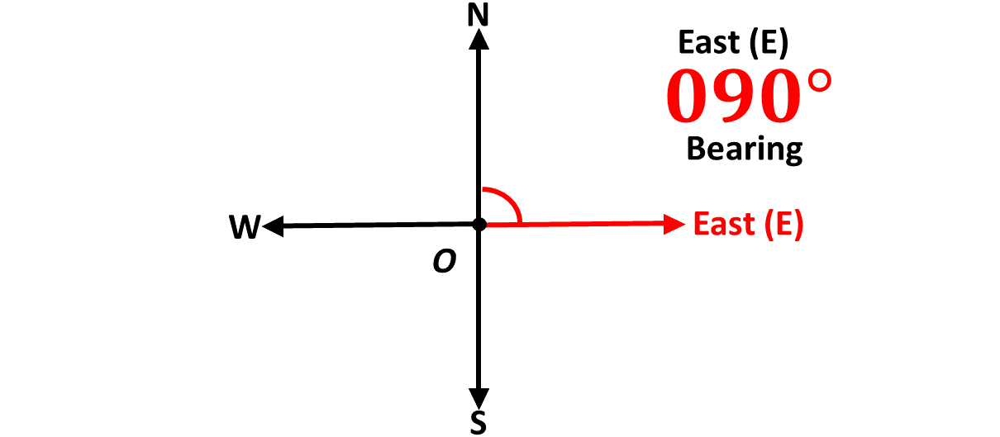

Bearing is a way to describe the direction of one point relative to another. It is commonly used in navigation, geography, and surveying to provide accurate directional information.
A bearing is the angle measured in degrees in a clockwise direction from the north line to the line connecting two points. Bearings are always measured from the north and written as three digits for clarity. For example, a bearing of 45 degrees is written as 045°.
We can also say that bearings give the direction of a point in the cartesian plane from the origin, O. Remember, the cartesian plane is the plane in which we draw our \(x\)-axis and our \(y\)-axis, and the origin is the point of intersection of the two perpendicular lines.
Imagine you are standing at the origin and facing the direction of the positive \(y\)-axis. In bearing, we can also say that you are facing North, usually indicated by the letter, \(N\).
This means that the positive \(y\)-axis gives the direction North.
What name do you think is given to the direction when you turn in an angle of \(180^\circ\), that is, when you turn to face the negative \(y\)-axis? South, also represented by the letter \(S\).
Similarly, when you are facing North and you turn in a direction of \(90^\circ\) clockwise, you will now be facing the positive \(x\)-axis, which is the direction East \((E)\).

Again, from the North, if you turn \(270^\circ\) clockwise, you will now be facing the negative \(x\)-axis, which is the direction West, represented by the letter, \(W\).
So we have North \((N)\) for the positive \(y\)-axis, South \((S)\) for the negative \(y\)-axis, East \((E)\) for the positive \(x\)-axis and West \((W)\) for the negative \(x\)-axis. These are called cardinal points.
We use the compass to measure angles. The compass is the instrument in your mathset that looks like the semi-circle.
Remember, that bearings are always taken from the North and in the clockwise direction.
Find below a video on how to draw and measure angles with the compass, and please subscribe to the channel to help our platform.
There are two (2) types of bearings. They are
1. Compass bearing and
2. Three-figure bearing or true bearing.
Compass bearings are expressed using cardinal directions. Eg. \(N45^\circ E\).
In the example above, the first cardinal point, North \(N\), is the starting direction or position of the person or object in question and the angle, \(45^\circ\), is the angle through which the person or object have turned from North towards East.
This is illustrated in the diagram below:
In the diagram above, you say that the bearing of point P from point Q is \(N45^\circ E\).
You say:
\(N45^\circ E \Rightarrow\) North 45 degrees East.
Example 1
Describe the direction below using compass bearing.

Solution
In the diagram, the direction of M from the origin is \(E23^\circ S\)
Example 2
Illustrate \(S80^\circ E\)
Solution
Example 3
Describe the direction below using compass bearing.
Solution
Example 4
Illustrate \(N70^\circ W\)
Solution
Example 5
Describe the direction below using compass bearing.
Solution
Write the compass bearings of the directions indicated in the diagram below:
- \(\hspace{0.5cm}P\)
- \(\hspace{0.5cm}A\)
- \(\hspace{0.5cm}T\)
- \(\hspace{0.5cm}Q\)
- \(\hspace{0.5cm}R\)
Solution
Illustrate the compass bearings given below.
- \(S20^\circ E\)
- \(N75^\circ W\)
- \(S60^\circ E\)
- \(E30^\circ N\)
- \(W25^\circ S\)
Solution
True bearing, also known as the three figure bearing, is the bearing that is measured clockwise from the north line.
It is called three figure bearing because we express it using three digits or figures. Example, a bearing of 45 degrees is written as \(045^\circ\).
Example 6
Describe the direction below using true bearing.
Solution
Example 7
Illustrate \(080^\circ\)
Solution
Example 8
Describe the direction below using true bearing.
Solution
Example 9
Illustrate \(070^\circ\)
Solution
Example 10
Give the three figure bearing of the point \(G\) below.
Solution
Write the true bearings of the directions indicated in the diagram below:
- \(\hspace{0.5cm}P\)
- \(\hspace{0.5cm}A\)
- \(\hspace{0.5cm}T\)
- \(\hspace{0.5cm}Q\)
- \(\hspace{0.5cm}R\)
Illustrate the compass bearings given below.
- \(\hspace{0.5cm}020^\circ\)
- \(\hspace{0.5cm}075^\circ\)
- \(\hspace{0.5cm}060^\circ\)
- \(\hspace{0.5cm}030^\circ\)
- \(\hspace{0.5cm}025^\circ\)
Write the compass bearing equivalence of the following directions.
- \(\hspace{0.5cm}020^\circ\)
- \(\hspace{0.5cm}075^\circ\)
- \(\hspace{0.5cm}060^\circ\)
- \(\hspace{0.5cm}030^\circ\)
- \(\hspace{0.5cm}025^\circ\)
Write the three figure bearing equivalence of the compass bearings given below.
- \(S20^\circ E\)
- \(N75^\circ W\)
- \(S60^\circ E\)
- \(E30^\circ N\)
- \(W25^\circ S\)
A vector is a mathematical quantity that has both magnitude (size) and direction. Vectors are used to represent quantities like displacement, velocity, force, and more.
Vectors can be written in component form, eg. \(\overrightarrow{PQ} =\) \(\begin{pmatrix} x \\ y \end{pmatrix}\) or in magnitude-direction form, eg. \(\overrightarrow{PQ} =\) \((5 km, 060^\circ)\).
In this lesson, we will learn how to graphically represent vectors in component form and also vectors in magnitude and direction form.
You say;
\(\overrightarrow{PQ} =\) \(\begin{pmatrix} x \\ y \end{pmatrix} \Rightarrow\) Vector \(PQ\) is equal to \(x\) on \(y\).
A vector in component form is written as \( \mathbf{v} = \begin{pmatrix} x \\ y \end{pmatrix} \), where \( x \) and \( y \) represent the horizontal (x-axis) and vertical (y-axis) components of the vector.
1. Horizontal Component (\(x\)):
Represents the displacement along the x-axis. If \(x\) is positive, it means the direction is to the right, if \(x\) is negative, it means the direction is to the left.
2. Vertical Component (\(y\)):
Represents the displacement along the y-axis. If \(y\) is positive, it means the direction is to the top or upwards, if \(y\) is negative, it means the direction is to the bottom or downwards.
STEPS
To express a vector in component form graphically, follow the steps below:
1. Draw a Coordinate System
Plot the x-axis and y-axis on a graph or plane.
2. Mark the Initial Point
Typically, the vector starts at the origin (0, 0) unless stated otherwise.
3. Locate the Terminal Point
From the initial point, move along the x-axis by the value
of \( x \) (positive for right, negative for left) and then move parallel
to the y-axis by the value of \( y \) (positive for up, negative for down).
4. Draw the Vector
Connect the initial point to the terminal point with an arrow. The
arrow starts at the initial point and points toward the terminal point.
5. Label the Vector
Label the vector with its component form, e.g., \( \mathbf{v} = (3, 4) \).
Example 11
Represent the vector \(\overrightarrow{PQ} = \begin{pmatrix} -3 \\ 4 \end{pmatrix}\) graphically.
Solution
Example 12
Represent the vector \(\overrightarrow{BC} = \begin{pmatrix} 2 \\ 3 \end{pmatrix}\) graphically.
Solution
Example 13
Represent the vector \(\overrightarrow{QR} = \begin{pmatrix} -4 \\ 5 \end{pmatrix}\) graphically.
Solution
Example 14
Represent the vector \(\overrightarrow{CD} = \begin{pmatrix} 5 \\ 7 \end{pmatrix}\) graphically.
Solution
Example 15
Represent the vector \(\overrightarrow{MN} = \begin{pmatrix} -5 \\ -3 \end{pmatrix}\) graphically.
Solution
Represent the following vectors graphically.
-
\(\hspace{0.3cm} \overrightarrow{MT} = \begin{pmatrix} -4 \\ -3 \end{pmatrix}\)
-
\(\hspace{0.3cm} \overrightarrow{BF} = \begin{pmatrix} 2 \\ -5 \end{pmatrix}\)
-
\(\hspace{0.3cm} \overrightarrow{DX} = \begin{pmatrix} 4 \\ 6 \end{pmatrix}\)
-
\(\hspace{0.3cm} \overrightarrow{ZY} = \begin{pmatrix} -2 \\ -6 \end{pmatrix}\)
-
\(\hspace{0.3cm} \overrightarrow{MT} = \begin{pmatrix} -3 \\ -3 \end{pmatrix}\)
A vector in magnitude-direction form is written as \( \mathbf{v} = \left( \vert \mathbf{v} \rvert, \theta^\circ \right) \),
where \( \vert \mathbf{v} \rvert \) represents the magnitude of the vector and \( \theta^\circ \) represents the three figure bearing
or true bearing of the vector.
1. Magnitude \(\left( \vert \mathbf{v} \rvert \right)\):
Represents the size of the vector, eg the distance of the vector.
2. True Bearing (\( \theta^\circ \)):
Represents the true bearing of the given vector, e.g., \(045^\circ\).
You say;
\( \vert \mathbf{v} \rvert \Rightarrow \) Magnitude of vector \(\mathbf{v}\).
STEPS
To express a vector in magnitude-direction form graphically, follow the steps below:
1. Draw a Coordinate Plane
Start with the x-axis and y-axis.
2. Plot the Initial Point
The initial point is usually at the origin (0,0), unless stated
otherwise.
3. Determine the Direction
Use the angle θ to determine the vector's direction. Place a
protractor at the origin or the starting point and mark the angle.
4. Determine the Magnitude
Using the chosen scale (e.g., 1 cm = 5 units), measure the vector's length
along the direction indicated by the angle, θ.
5. Draw the Vector
Draw a straight line starting from the origin to the endpoint,
with the measured length and direction. Add an arrowhead at the
endpoint to indicate direction.
6. Label the Vector
Label the vector with its magnitude and direction, e.g.,
\(\overrightarrow{PQ} = \left( 5 \ km, 060^\circ\right)\)
Example 16
Represent the vector \(\overrightarrow{AB} = \left(3 \ km, 060^\circ \right) \) graphically.
Solution
Example 17
Represent the vector \(\overrightarrow{QR} = \left(5 \ km, 120^\circ \right) \) graphically.
Solution
Example 18
Represent the vector \(\overrightarrow{KN} = \left( 6 \ km, 300^\circ \right) \) graphically.
Solution
Example 19
Represent the vector \(\overrightarrow{SK} = \left(4 \ km, 210^\circ \right) \) graphically.
Solution
Example 20
Represent the vector \(\overrightarrow{LK} = \left( 5 \ km, 075^\circ \right) \) graphically.
Solution
Represent the following vectors graphically.
-
\(\hspace{0.3cm} \overrightarrow{MK} = \left( 6 \ m, 170^\circ \right) \)
-
\(\hspace{0.3cm} \overrightarrow{BC} = \left( 4 \ km, 065^\circ \right) \)
-
\(\hspace{0.3cm} \overrightarrow{XZ} = \left( 10 \ km, 205^\circ \right) \)
-
\(\hspace{0.3cm} \overrightarrow{PG} = \left( 10 \ km, 315^\circ \right) \)
-
\(\hspace{0.3cm} \overrightarrow{BF} = \left( 5 \ km, 045^\circ \right) \)
The bearing of Afiba from Kweku is \(063^\circ\) degrees and the distance between them is 5 m.
-
Write the compass bearing of Afiba's direction from Kweku.
-
Write the vector connecting them in magnitude-bearing form.
-
Graphically represent the vector connecting Kweku to Afiba.
Test yourself on what you have learnt so far. Click on the link below when you are ready.
Kindly contact the administrator on 0208711375 for the link to the test.
For sponsorship or advertisement kindly call or whatsapp on 0208711375 or 0249969740.